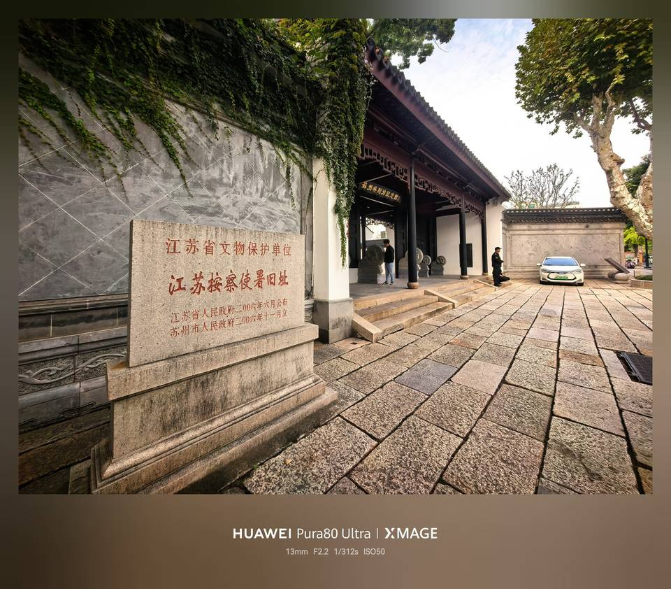
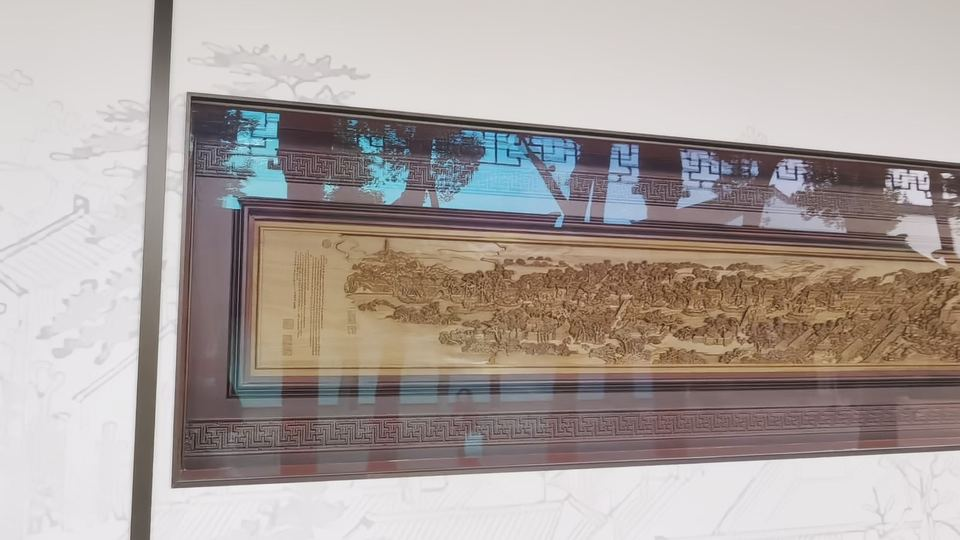
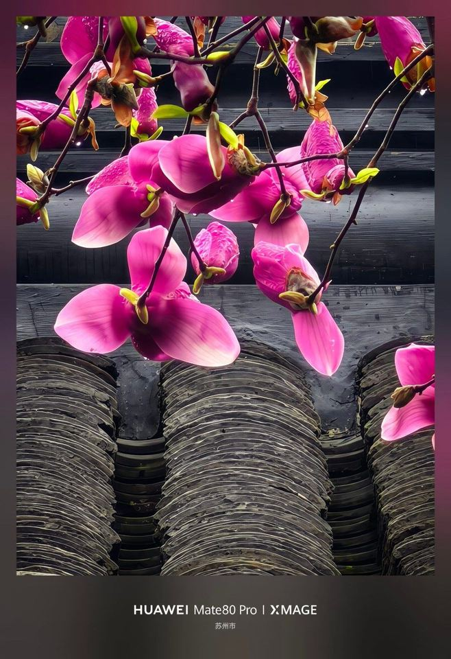

五站
逐站讲点 · 60 / 35 / 15 / 10 / 60
每站含：讲师口语稿（可照读）→ 现场看点（可展开）→ 纠错与待核 → 信源。带 ★ 的为两个文化打卡点。
本线 · 壹 · 60 分钟
江苏按察使署旧址（今苏州林则徐纪念馆）
提刑按察使司 · 臬台衙门 × 林则徐 1823 × 七君子事件 × 三百年玉兰

图：江苏按察使署旧址大门（今苏州林则徐纪念馆），左侧为「江苏省文物保护单位」石碑
讲师开场 · 口语稿（站在大门外）
「大家抬头看这块牌子。这栋楼，清代是江苏省的『高等法院』——名字叫提刑按察使司，俗称臬台衙门。全省的刑狱、官员考核，都从这里发落。」
「更巧的是：林则徐在这儿上过班。道光三年，1823 年，他三十九岁，到苏州当江苏按察使，办公的地方就是这栋楼。他后来去虎门烧烟，是十六年以后的事——而虎门那件事的起点，就在苏州。这个我们进去慢慢讲。」
这是什么衙门
| 项 | 细节 |
|---|
| 官名 | 提刑按察使司，主官按察使，俗称臬台；主管全省刑狱、官吏考核。与巡抚（抚台）、布政使（藩台）并称「三大宪」 |
| 建筑前身 | 明代兵备道署（始建一说为明成化八年，1472） |
| 成为臬台 | 清雍正八年（1730）江苏按察使自江宁迁苏州，以此署为衙门——苏州由此补齐「省城三巨头」 |
| 毁与建 | 咸丰十年（1860）毁于战火，同治六年（1867）重建 |
| 民国 | 江苏高等法院所在。1936—1937 年「七君子事件」在此羁押、审判；抗战胜利后曾在此公审陈璧君；解放初苏州市人民政府曾设于此 |
| 今天 | 2006 年江苏省文物保护单位；2023 年修缮后免费开放；2026 年 10 月 26 日林则徐纪念馆焕新开放，展陈面积 518 ㎡ → 1117 ㎡，主题「基石与丰碑——林则徐的思想演进与近代中国觉醒」 |
林则徐专题 · 40 分钟（本条线主课）
分四段走，每段 8–10 分钟，跟着展陈动线挪。这一段是本线的分量所在，别压缩。
第一段 · 入苏：两任近七年（10 分钟）
道光三年（1823）任江苏按察使（1823—1824），时年 39 岁；1832—1836 任江苏巡抚，前后在苏近七年。
按察使任上做的事：整顿吏治、疏浚河道、赈灾救荒，并开展禁烟——馆方展陈口径是「点燃中国第一把销烟之火」。
讲师口径：先有江苏的禁烟实践，后有 1839 年的广东虎门。讲清这个顺序，学员才明白苏州不是他的「过路站」，而是他的「试验田」。
第二段 · 从苏州到虎门（10 分钟）
时间线：1823 苏州查拿烟贩、设局收缴 → 1838 湖广禁烟 → 1839 虎门销烟。一条线串下来，起点在苏州。
讲师必背：虎门销烟用的是海水浸泡＋生石灰，不是火烧；「烧烟」是民间俗称。这个细节说对了，专业度立刻不一样。
第三段 · 水利与赈灾：一个「技术型官员」（10 分钟）
江苏任上主持疏浚白茆河、娄江等水道；办赈以「以工代赈」为主——灾年开工，既救人又修河。
回扣苏州的城市性格：水是命脉，治水就是治民。这一句可以和站③的「河街并行」、站②的「学士河」呼应。
第四段 · 展陈看点（10 分钟）
全国第十家林则徐纪念馆；馆中央陈列苏绣艺术家、国家级非遗传承人姚建萍创作的苏绣《林则徐》（馆方称全球首幅苏绣林则徐）。
抓一个细节讲：用苏绣绣林则徐——苏州人用自己的手艺，给一位外省官员立像，这是苏州人表达敬意的最高方式。可与站⑤牙雕「以技传人」呼应：这条线从头到尾，苏州人都在用手艺记事。
★ 打卡点 A · 1:1 黄杨木雕《姑苏繁华图》（10 分钟）
A 文化打卡点 · 必拍长廊西侧 · 上午光线最好

图：按察使署通道西侧长廊陈列的黄杨木雕《姑苏繁华图》
通道西侧长廊陈列 1:1 黄杨木雕《姑苏繁华图》。作品上就刻着「冯文土」三个字——这是现场实物署名，不是传闻；未经本人授权，不可能把名字刻上作品。作者为浙江东阳木雕名家冯文土（首批国家级非遗东阳木雕代表性传承人、中国工艺美术大师、亚太手工艺大师，1944 年生，以「半圆雕」「树皮胞雕」等技法著称）。
「《姑苏繁华图》里画的那个『江苏按察使司』，就是脚下这块地。」—— 画里画外，同一个衙门
讲法三句，别铺开：
- 这幅画十二米多长，画的是 1759 年苏州从胥门到虎丘，一万两千多人、四千多家店铺；
- 木雕按 1:1 复制，意味着这一整排木头，就是那一整卷绢；
- 你现在站的这个院子，在画上找得到——你在画里，画也在你脚下。
拍摄指引：长廊光线偏暗，靠窗一侧用斜侧光拍木雕层次最清楚；要拍「人与长卷同框」，退到廊尽头用广角，人站画面边缘三分之一处，别站中间挡画心。
作者已定稿 · 可以点名讲：「冯文土」三字刻在木雕作品上，属现场实物题识（一手物证）；网上查不到公开报道，不影响现场署名成立。仍待核的只剩「1:1」这个比例表述——现场看说明牌或问馆方；没确认就只说「长廊里有一卷木雕的《姑苏繁华图》」，不讲比例。
庭院树木 · 官署里的讲究（10 分钟）

图：江苏按察使署旧址中庭的二乔玉兰
| 看点 | 细节 |
|---|
| 金玉满堂 | 中庭东侧二乔玉兰、西侧桂花对植——金桂为「金」，玉兰为「玉」。春看「绿肥红瘦」，秋看「金玉满堂」 |
| 二乔玉兰 | 挂牌编号 沧553；植于清康熙年间，树龄 320 余年，树高 11.4 米、地围 260 厘米、冠幅 10.7 米；保护等级二级，养护单位苏州名城保护集团；有「姑苏第一玉兰」之称，是古城区唯一的玉兰古树 |
| 桂花与紫藤 | 桂花挂牌多株，最大一株编号 沧559、树龄 271 年；西侧紫藤约 141 年 |
讲法：衙署「重门复道」的围合，冬季挡西北风、夏季阴凉，加上青砖下的排水，才让这棵树活了三个世纪——苏州的树，是建筑养出来的。
讲师提问（收这一段时问）
「一个管刑狱的衙门，为什么院子里要种桂花和玉兰？」——引出金玉满堂、官署吉祥话。
「林则徐在苏州，只是路过吗？」——引出两任、近七年。
信源：苏州名城保护集团（纪念馆焕新、1117㎡、「基石与丰碑」主题、姚建萍苏绣）；苏州市方志办与地方媒体（雍正八年迁苏、咸丰十年毁、同治六年重建、江苏高等法院与七君子事件）；苏州市园林和绿化管理局古树名木挂牌＋现代快报（沧553、320 余年、11.4m／260cm／10.7m）；木雕作者＝作品实物刻名「冯文土」（现场一手物证，已定稿）；「1:1」比例仍为口述待核。
本线 · 贰 · 35 分钟
剪金桥巷 · 504 米与一张八百年前的图
滨水文旅剪金坊 × 吴王剪金传说 × ★砖雕《平江图》× 洪钧祖居 × 古城细胞解剖

图：剪金桥巷旁的学士河（第一直河）水巷与游船码头
讲师口语稿（巷南口进巷前）
「这条巷子叫剪金桥巷，全长 504 米，从我们刚走过的道前街，一直通到北面的干将西路。名字里有一座桥，桥已经不在了——但奇怪的是，八百年前的一张地图上，还标着它的名字。」
「走到北口我带你们看那张图。那是一件能让苏州人骄傲的东西。」
基本盘
| 项 | 内容 |
|---|
| 起止 | 南起道前街，北至干将西路，全长 504 米，是 32 号街坊西侧的主巷 |
| 改造 | 2022 年启动提升改造，2025 年 12 月 11 日正式开街，定名「滨水文旅剪金坊」；苏州名城保护集团联合沧浪街道推进 |
| 昇平里 | 38 号原昇平中心小学，改造成「昇平里」，做年轻力业态 |
| 巷中有桥 | 跨学士河有乘骝桥（石平桥）——巷中有桥，是「水陆并行」的最小样本 |
眼前这条河 · 三横四直里的「第一直河」（8 分钟 · 水边讲）
剪金桥巷西侧这条河，就是苏州古城「三横四直」里的第一直河，今名学士河。宋《平江图》上它的位置已很突出，是古城最早开凿的河道之一。公元前 514 年伍子胥筑阖闾大城，「相土尝水、象天法地」，在城内设计纵横交错的河流、立水陆城门各八座——这套「水陆并行、河街相邻」的双棋盘格局，正是从这里来的。
| 项 | 内容 |
|---|
| 起止 | 南起盘门水关桥（接环城河），北至皋桥接中市河；全长约 3.32 公里，平均宽约 6.68 米，水域面积约 22.16 万平方米，跨桥 18 座 |
| 流经 | 沧浪、金阊两个街道。北段吴趋坊与汤家巷夹河；中段学士街与施林巷、剪金桥巷夹河，到歌薰桥附近会第三横河；南段百花洲与吉庆街、西大街，直至盘门水关入环城河 |
| 权威定名 | 清嘉庆二年（1797），江苏巡抚费淳主持全城河道大疏浚后绘刻《苏郡城河三横四直图》碑（今存苏州城隍庙工字殿）。碑文：「第一直河，自皋桥起，南行经升平桥、歌熏桥直至盘门城桥会流，折东归入内城壕。」碑阳《重浚苏州城河记》、图上方《苏郡城河三横四直图说》1200 余字，详述起止分合并订正方志之误——央视网称其为「官方对三横四直河的权威解释，后世皆以此为准」 |
讲师口语稿（站在水边／游船码头）
「别小看这条不起眼的小河。苏州人把城里的骨干水道叫『三横四直』，眼前这条就是四直里的第一条——第一直河，今天叫学士河。它从盘门水关一路流到皋桥，三公里多，八百年没挪过位置，宋《平江图》上就画着。」
「那剪金桥呢？它不在这条干河上。八百年前，从第一直河分出过许多小支河，剪金桥就架在其中一条支河上。后来干河还在，支河一条条淤没了——桥下的水先没，桥成了旱桥，最后连桥也拆了，只剩巷名。等会儿走到那个三叉路口，我们就是去找那条已经不见的支河。」
「所以站在码头边，眼前这水是八百年前那张图上就有的水；而巷子的名字，记着一条已经不见的水。一存一亡，都在这一百步里。」
考据加分 · 一条支河的消失史：宋《平江图》上第一直河有大量派生支河，桥名包括剪金桥、胡家桥、成家桥、刘家桥、小莲湖桥、华家桥、钱驸马桥、徐家桥等。明末《苏州府城内水道图》所记干流变化不大；至清乾隆《姑苏城图》，皋桥至桃花桥段已湮塞，派生支河除成家桥所跨河残存一小段外几乎全消失（乾隆十一年至六十年，城内河道约 50 年未疏浚）。嘉庆二年图碑时，第一直河仅剩一条派生支河；至 2000 年派生河道全部不存，而盘门水关至皋桥的干流至今仍在。这正是站②「河先没、桥后没」的地理依据：没的是支河，不是眼前这条干河。
⚠️ 讲师防错 · 两个口径别混讲：①历史口径＝「三横四直」，出自清嘉庆二年《苏郡城河三横四直图》碑；现代水务口径＝「三直三横」——苏州市政府《苏州市城市中心区排水（雨水）防涝综合规划》（2016）列古城内河道总长 34.72 公里，骨干河道「三直」＝学士河、临顿河-齐门河、平江河，「三横」＝桃花坞河-东西北街河、干将河、府前河。讲清代碑刻用「三横四直」，讲今天水务用「三直三横」，别说成「自古就是三横四直、一点没变」。②部分区级稿件写作「三横三直」，属异说，不采用。③四直里「第四直河」才是平江路那条，别与「第一直河」混淆。④嘉庆元年＝1796（疏浚起）、嘉庆二年＝1797（图碑立），两个年份别写串。
现场指认：码头边先让学员看清河的走向与「河街相邻」——一岸学士街、一岸剪金桥巷；再回望巷内，说明「图上那条支河」已从地面上消失。照片里这座钢拱桥是今桥，不是剪金桥，别指错。
巷名传说（讲作「老苏州的说法」，不作信史）
相传吴王夫差与西施乘画舫出游，靠岸时西施欲梳妆而无胭脂，夫差剪下一段金簪，命宫女换胭脂。此后小桥得名剪金桥，巷随桥名。
考据加分 · 讲给懂行的听：此说不见于苏州历代旧志，但被《苏州市吴文化地名保护名录》（市区卷）、《苏州地名传说》收录，可讲。而剪金桥本身是真的——最早见于唐《吴地记后集》「续添桥梁」；《沧浪区志》记：「宋前古桥……20 年代填河时湮废」。巷存桥亡，这四个字就是讲点。
「这条巷子因一座桥得名。桥没了，巷还叫这个名字——地名是苏州最耐磨的一层建筑。」
当年的桥在哪儿 · 现场指认
讲师口语稿（走到西支家巷口的那个三叉路口）
「巷名是打桥上来的——老苏州说，吴王剪下一段金簪给西施换胭脂，那座小桥就叫了剪金桥，巷子跟着桥叫。传说归传说，桥是真的：唐《吴地记后集》里就记着；《沧浪区志》记它到 1920 年代填河时才最终湮废——巷存桥亡。」
「那桥原来在哪儿？就在我们脚下这个三叉路口——剪金桥巷和西支家巷相交的地方。当年桥下是有河的，跨第一直河东侧的支河：《平江图》把「剪金桥」三个字标在西支家巷西口，桥底下那道河线也画得清清楚楚。可到了清乾隆年间一直到清末的老地图上，桥还在，河没了——只剩一座旱桥。再往后连桥也拆了，只剩这个路口和这个巷名。」
「所以这条巷子藏着两层消失：河先没，桥后没。等会儿走到桥头那块复刻的《平江图》前，我们好好找一找——找桥名，也找桥底下那条河。」
「桥没有，路口在，名字在。这就是苏州地名最耐磨的地方。」
考据加分 · 一条地图证据链：南宋《平江图》（1229）＝桥名＋桥下河线俱全；清乾隆年间至清末的苏州老地图＝只剩一座旱桥，桥下无河；1920 年代＝桥亦湮废，只剩巷名。河的消失明显早于桥的消失，这是本线最硬的一处「图与地」对照。辨析（别把两次「填河」说成同一件事）：《沧浪区志》「20 年代填河时湮废」说的是桥体最终废去；清代地图上的旱桥说明桥下之水此前已失。两处所指是否同一条水道、旱桥何时改成地面，截图已到、仍待方志原文再核，现场不下断语。清末图实证（1900 年晚清苏州地图局部，讲师提供截图，见下图）：「翦金橋」三字与巷口实心桥位标识仍在，却未见跨河桥符号与桥下支河河线；同图西侧的学士河（第一直河）仍画作带状水道，并标「歌薰橋」及跨河桥符号——干河在、支河不在，正是「河先没、桥后没」的图面依据。图上巷名作「西支家巷」「東支家巷」，字形为「支」（非「枝」），此前口述字形据此定。
指认要点：站定后先让学员看岔口的形状，再指向西支家巷巷口——老地图上的桥位标识正落在这里。现场核：三叉路口的准确岔向、与原河道走向的对应，以 1900 年老地图截图与实地路形比对为准。

图：1900 年（清光绪二十六年）晚清苏州地图局部（讲师提供截图）。图上标有翦金橋巷、翦金橋、西支家巷、東支家巷、臬署与道前街；「翦金橋」三字标在翦金橋巷与西支家巷相交的巷口，桥位以实心标识表示，桥下已无支河河线。
★ 打卡点 B · 砖雕复刻《平江图》（8 分钟 · 出巷北口顺路）
B 文化打卡点 · 本条线独家讲法剪金桥巷北入口 · 上午顺光

图：剪金桥巷北入口的砖雕复刻《平江图》
| 项 | 内容 |
|---|
| 这处 | 32 号街坊改造时设置于剪金桥巷北入口（年份以现场说明牌为准），砖雕复刻版（讲师 2026-11-07 现场实物所见，材质据此订正），完整呈现南宋苏州的桥梁分布格局；与碑刻博物馆藏的石刻正本材质不同，别混说 |
| 正本 | 南宋绍定二年（1229），郡守李寿朋主持绘刻；碑高约 2.84 米、宽 1.46 米 |
| 地位 | 中国现存最古老的石刻城市平面图，也是世界上罕见的巨幅古代城市图 |
| 原碑 | 藏苏州碑刻博物馆（文庙）；1961 年随「苏州文庙内宋代石刻」列为第一批全国重点文物保护单位；2023 年 7 月列入国家文物局《第一批古代名碑名刻文物名录》 |
现场讲法 · 三步（这是全网少有人讲的对照）
第一步 · 找名字，再找河。「大家往图北半部偏西看，先找三个字：剪金桥，就在西支家巷西口、跨第一直河东侧那条支河上。找到了别急着走——再低头找桥底下那道河线：八百年前这张图上，桥是实实在在架在河上的。刚才在巷里说过，清乾隆到清末的老地图上，这儿只剩一座旱桥，桥下早没水了；河是后来才不见的。所以今天在图前要找两样：桥名，和桥下的河。」
第二步 · 抬头。「现在抬头，看看你脚下这条巷子。图和地，八百年对得上。」
第三步 · 收一句。「苏州 2500 年城址没变过，这张图就是证据；而你脚下这条巷子，是证据里的一条线。」
画法讲点（讲透这一层，学员会「哦」一声）：《平江图》用的是平面与立面结合的画法——城墙、河道是平面铺开的，山丘、塔、城门楼却立起来了。所以它看着不像地图，更像一张「从天上斜看下去的画」。这也是中国古地图的传统画法，和西方地图完全不同。
拍摄指引：碑在巷北入口，上午顺光，手机拍即可；拍全景要退到干将西路一侧，人站碑侧三分之一处，别挡图心。让学员拍「手指着剪金桥三个字」的画面，是最好的传播素材。
现场核：碑的实际尺寸与复刻说明牌落款，以及位置是否因街区微调而变动。
洪钧祖居（西支家巷口 · 2 分钟 · 只指认不进去）
从剪金桥巷西侧巷口进去几十米就是西支家巷，其内有洪钧祖居：现存西一路五进，门厅面阔三间、穿斗式梁架、桁间牌科斗六升；门厅仿明式，大厅梁架雕刻精细。2018 年公房管理处修缮，目前不对外开放。
「这里是洪钧考上状元之前住的地方。他在这儿住了近三十年。」
洪钧祖居（西支家巷）本线脚边。祖上传下的老宅，出仕前读书应试之所，住了近 30 年。现存，不开放，巷口指认。
洪钧故居 · 桂荫堂（悬桥巷 27／29 号）约 2 公里外，不在本线。光绪十七年（1891）出使回国后新建，占地 3000 余㎡，苏州市文保。别讲混。
两处宅子怎么讲（本线最省力的一个人物对照）：同一个人，两处宅子——一处是他还没考中的时候住的，一处是他出使四国回来以后盖的，中间隔着三十年。三十年前他在西支家巷的灯下读书；三十年后，他从俄国、德国、奥地利、荷兰绕了地球一圈回来，在悬桥巷盖了三千平方米的桂荫堂。
顺带一句（学员爱听，讲人即可别展开）：洪钧的妾室赛金花随他出使欧洲，是晚清社交场上最有名的中国女性之一。野史太多，讲多了就跑偏。
老巷改造「新」在哪、「旧」留了什么（10 分钟）
- 明清这里是官署集中地；今天 32 号街坊聚焦「文化＋金融」，注册金融单位 30 余家。
- 做法：古城细胞解剖工程——街坊划为 71 个保护更新单元、282 个实施院落，一户一档给老宅建信息档案；架空线入地、雨污分流、电力增容。
- 关键一句：原住民没有搬走。改造后居民告别「拎马桶、挤公厕」，巷子敞亮，烟火气还在。
- 2024 年，32 号街坊保护更新项目入选《习近平文化思想实践案例选编（2024 年）》。
32 号街坊老宅谱（行进中指认，不必逐户进）
| 老宅 | 一句话 |
|---|
| 洪钧祖居（西支家巷） | 同治七年状元、晚清外交家，出使俄德奥荷四国；出仕前在此住近 30 年，现不开放 |
| 曹沧洲祠 | 瓣莲巷 4 号；宋名「版寮巷」、清谐音雅化为「瓣莲巷」。吴门名医，今引入雷允上做中医文化馆 |
| 畅园 | 小型古典园林，今为精品园林酒店 |
| 天官坊 | 王鏊在吏部任职，吏部雅称「天官」；明代立坊表之，巷以坊名 |
| 西支家巷沈宅 / 吴宅 | 明清宅第，活化利用中 |
| 庙堂巷 47、49 号 | 旧有东岳二圣庙，巷以庙名；成片老宅，修缮样本 |
| 富郎中巷 | 北宋刑部郎中富严居此，「郎中」是官不是医生；南宋改「好礼坊」，《平江图》上标着 |
| 舒适旧居 | 电影表演艺术家舒适旧居 |
| 忠仁祠 / 德寿坊 / 范宅 / 清微园 | 祠堂、坊门与宅园，各有红色故事与修缮故事 |
四条巷名的来路（考据段 · 讲给爱较真的学员）
① 天官坊 · 一个官衔，一条巷名：王鏊实职是吏部右侍郎、吏部左侍郎，后入阁为户部尚书、文渊阁大学士（《明史》本传、故宫博物院、苏州图书馆）。「天官」不是他真正的官名——《周礼》六官以天官冢宰居首，唐武则天光宅元年（684）改吏部为天官，后世遂以「天官」雅称吏部；明代读书人好用拟古称，把六部官员恭维为天官、地官。天官坊＝为在吏部任职的王鏊所立的牌坊，巷以坊名；乾隆《苏州府志》「吴县明坊」栏注「三并为王鏊立」。⚠️ 讲师防错：部分地方资料写「明吏部尚书王鏊」，与《明史》本传不合；现场只说「王鏊在吏部任职，吏部雅称天官」，别把「吏部尚书」这个头衔安到他头上。顺带一句：学士街另有一说挂的是他的大学士衔（谐音说见站②），天官坊挂的是吏部衔——一人两名，两条地名。
② 庙堂巷 · 「庙堂」不是朝廷，是真有一座庙：乾隆《苏州府志》首注「有东岳二圣庙，故名」；民国《吴县志》卷三十三记该庙为「东岳二圣行祠」，祀唐忠臣张巡、许远（安史之乱死守睢阳）。旧俗三月廿八东岳大帝诞辰，巷里进庙祭祀、香火极盛，范广宪诗「当年巷祭庙堂开，只今香火都零落」。卢熊《苏州府志》已作庙堂巷——名字听着像庙堂之高，来处却是巷里一座庙。
③ 瓣莲巷 · 一次谐音雅化（与「药市 → 学士」同类）：宋名版寮巷（卢熊《苏州府志》作板寮巷），「版寮」指以夹板为墙的小屋；清代依吴语谐音雅化为瓣莲巷，民国《吴县志》注「乾隆《吴县志》作瓣莲巷」。范广宪诗「板寮怀旧难成市，赚得谐声误瓣莲」说的就是这件事。巷名听着像复瓣莲花，其实跟花没关系；4 号曹沧洲祠，本线顺路指认。
④ 富郎中巷 · 「郎中」是官，不是医生：断句要作「富郎中／巷」。北宋富严（大中祥符四年 1011 进士）以刑部郎中守乡郡，致仕后「未尝一造官府，以耆德称」，里人于其所居立德寿坊（范成大《吴郡志》卷二十六）；南宋取《论语》「富而好礼」改好礼坊，卢熊《苏州府志》：「好礼坊，富郎中巷，旧德寿坊，以表刑部郎中富严所居，嘉泰初重立，改今名」。《平江图》上标的正是「好礼坊」——等会儿在北口砖雕上可以顺手找一找。妙处在后头：民国此巷多开业医生寓居（顾允若、宋爱人、陆子安等），吴语「郎中」即医生，民间遂把巷名解作「多医生之巷」，虽属穿凿，却无巧不成书。
四条巷名连起来是一堂地名课：一个官衔的雅称（天官坊）、一座真庙（庙堂巷）、一次谐音雅化（瓣莲巷）、一个官衔被后代误读（富郎中巷）。走在 32 号街坊里，脚下每一步都是一层来历；其中「好礼坊」还能在《平江图》上找到，与本线打卡点 B 正好接上。
讲师提问
「这条巷子改完了，你觉得哪些是新的，哪些还是老的？」
「官署、文庙、民居挤在一平方公里里，说明苏州古城什么特点？」——引出功能高度叠加、寸土寸金。
信源：姑苏区政府网站（转《新华日报》）／名城苏州集团（504 米、2022 启动、2025-12-11 开街、昇平里）；江苏省地方志办公室（陈其弟《以古桥之名，证吴都之史》——《平江图》标注剪金桥、唐《吴地记后集》、《沧浪区志》湮废）；苏州市方志办（剪金桥巷北入口砖雕复刻《平江图》，设置年份现场核）；苏州碑刻博物馆、国家文物局名录（绍定二年、2.84×1.46m、第一批国保、名碑名刻名录）；苏州名城集团（看苏州）／姑苏区政府（洪钧祖居西支家巷、五进、近 30 年、2018 修缮）；园区管委会转载与苏州发布（71 单元／282 院落／一户一档／30 余家金融单位）；苏州市政府《苏州市城市中心区排水（雨水）防涝综合规划》（2016，古城河道 34.72km／三直三横）；苏州吴文化地名研究所《你知道苏州的「三横四直」吗？》（嘉庆元年至二年费淳疏浚内城河 57km、《苏郡城河三横四直图》碑文「第一直河」原文、碑存城隍庙）；央视网《图上绘苏州（下）》（嘉庆二年 1797、官方权威解释、当时城内桥梁减少近 200 座）；澎湃新闻（碑高 1.6m／宽 0.8m、盛林基《苏郡城河三横四直图说》1200 余字）；姑苏区《姑苏区学士河：第一直河，绿水姑苏》（2021-12-24：前 514 年伍子胥筑城、3.32km／6.68m／22.16 万㎡／18 座桥）；《现代苏州》杂志（苏州新闻出版集团）《河街相望，第一直河的千年之约》（宋《平江图》支河桥名、明末《苏州府城内水道图》、清乾隆《姑苏城图》、2000 年支河全不存、中段剪金桥巷夹河）。1900 年晚清苏州地图局部（讲师提供截图：翦金橋巷巷口桥名与实心桥位标识、西支家巷／東支家巷、臬署、道前街、学士河与歌薰橋）；◐ 仍需现场核：剪金桥所跨支河的准确名称与走向，以 1900 年图与方志原文再核。
本线 · 叁 · 15 分钟
学士街 · 街名的由来与一位大学士
药市街 → 学士街 × 王鏊 × 河街并行 × 藩臬呼应一句

图：学士街空中航拍，可见第一直河（学士河）与剪金桥巷一带的河街并行格局
讲师口语稿（出西门拐上道前街时说）
「刚才我们看的是『管人的』衙门。现在往西走两百米，看『管钱的』——布政使司，俗称藩台衙门，全省的民政、财赋、人事都归它。有意思的是，这个衙门的地址，原来是一位大学士的家。」
「这位大学士叫王鏊，苏州东山人，明代正德年间的文渊阁大学士。唐伯虎说他『海内文章第一，山中宰相无双』。这条街为什么叫学士街？就是因为他的府第在这儿。」
街名由来
- 宋代名药市街（药材商肆聚集）。
- 明正德年间，王鏊（文渊阁大学士、武英殿大学士，洞庭东山人，成化十一年会元、殿试探花）府第在此；其子王延喆仿东山景物筑怡老园娱亲。街名由「药市」谐音转为「学士」。
- 唐寅评王鏊：「海内文章第一，山中宰相无双」。横巷天官坊亦因王鏊官职得名。
江苏布政使司（顺带联想 · 衙门已不存）
- 清顺治十八年（1661）王宅改建，康熙元年（1662）成江苏布政使署。
- 布政使俗称藩台，管一省民政、财赋、人事。江苏特殊：一省两藩台——江苏布政使驻苏州（辖苏州、松江、常州、镇江、太仓五府州），江宁布政使驻江宁。
- 左宗棠幼子左孝同曾任江苏布政使，衙署即在学士街。
苏州为什么是「省会」（本条线的总纲）
三大宪 · 双省会
抚台：清乾隆二十五年（1760）设江苏巡抚，常驻苏州，衙门在书院巷 20 号（今江苏巡抚衙门旧址，同治五年 1866 重建，现存大门、仪门、后堂、后楼；历任巡抚 215 人，海瑞、汤斌、林则徐、梁章钜、陶澍等）。
藩台：布政使司，学士街。臬台：按察使司，道前街。三大宪汇集一城。
而两江总督驻江宁（南京），江苏巡抚驻苏州——所以清代江苏是「双省会」格局。讲师口径：苏州是巡抚部院的治所。末任巡抚程德全 1911 年 11 月 5 日在此宣布江苏独立。
王鏊只讲三句（不上单元，别展开）
「这条街因一位大学士改名；他的宅子后来变成了全省的『财政厅』；要看他的真宅子，得去东山陆巷的惠和堂。」
为什么只讲三句：学士街的王鏊府第已经没有实物了——宅子改建成了布政使署，原宅不存。按本系列的降级原则，没实物可指的人，不讲成故事，只作街名由来的注脚。详见名人录。
现场可指
- 学士河（第一直河）与街道并行——「河街相邻」的活标本，站桥上看一眼就懂。
- 沿街清中期砖木民居十余处；今日是餐饮夜市街。
信源：苏州市方志办《说古道今》（药市街→学士街、王鏊府第、天官坊）；志书与地方资料（1661 改建／1662 成署、一省两藩台、左孝同）；巡抚衙门为维基引《苏州起义》等，建议补省保名录；学士街长度有 497 米／729 米两说，现场以路牌为准。
本线 · 肆 · 10 分钟
状元桥前这条路 · 苏州城内第二文脉
两条文脉之路 × 卧龙街／人民路 × 通和坊·吴县学前 → 新学前 × 1992—1994 干将路改造 × 桥名四变
两条文脉之路（本段先讲格局，别急着讲桥）
讲师口语稿 · 站在桥头，先抬手指路
「别急着看桥，先看脚下这条路。苏州城里有两条文脉之路。一条是南北向的人民路，从前叫卧龙街——范仲淹捐宅办的那所府学文庙就在这条街上，今天还在，人民路 613 号。另一条就是我们眼前这条东西向的干将路：改造以前，脚下这一段叫吴县学前、也叫通和坊，因为吴县的县学文庙就在这儿；往东到靠相门那头，有一段巧了叫新学前，因为长洲、元和两县合用的县学文庙在那儿。」
「一条南北、一条东西；一条府学、两座县学。所以这一段不只是「状元桥」，它是苏州城里的第二文脉。」
| 文脉 | 路 · 学宫 | 今天 |
|---|
第一文脉
（南北向） | 人民路，旧称卧龙街。苏州府学文庙——景祐二年（1035）范仲淹割南园之地创建，左庙右学，庙学合一 | 今苏州文庙（人民路 613 号），四大宋碑在此；本线站①已讲 |
第二文脉
（东西向） | 干将路，1994 年建成通车。西段吴县县学文庙（通和坊／吴县学前）＋ 东段长洲元和县学文庙（新学前，明嘉靖二十年 1541 由旧学前迁来） | 吴县学已无遗迹；长元县学大成殿尚存，在干将东路平江实验学校内，1998 年列为苏州市文保 |
眼前这条路：改造前叫「吴县学前／通和坊」

政通

人和
图：今干将西路通和坊重建牌楼，左「政通」、右「人和」，各取一字合为坊名「通和」
- 工程口径（官方）：干将路综合改造 1992 年 10 月动工，1994 年 9 月 28 日建成通车；全长约 7.03 公里，古城段做「两路夹一河」，联结园区与新区。苏州市住建局《苏州城建大事记》称其为「建国以来苏州最大的城市建设工程」，获建设部全国市政工程「金杯奖」。
- 改造前的老街坊：干将西路古城段自西向东由铁瓶巷 → 镇抚司前 → 通和坊等旧街巷连成；通和坊（太平桥至昇平桥）正是古城内最西一段，也就是我们脚下这段，旧时俗称吴县学前——因吴县县学文庙在此，今已无存。
- 东段那处「新学前」：干将路古城内东段原有一段叫新学前，因明嘉靖二十年（1541）长洲县学由旧学前迁来新建而得名；清雍正初年分设元和县，县学不另建、附于长洲县学，榜题「长洲元和县学」，简称长元县学，大成殿留存至今。
- 苏州地名网把这次改造称为「苏州古城内历史地名消亡最大的一次城市改造」——路是 1994 年才通的，留下的地名却全是学堂的名字。
这一段最值钱的一句：一条 1994 年才通车的新路，西头叫「吴县学前」，东头叫「新学前」。两座县学文庙早就不在路边了，名字却把这条东西干道钉成了一条文脉。讲完这句再看状元桥，格局就不一样了。
讲师口语稿（出巷过街时）
「前面这座桥，名字换过四次。第一次叫青龙桥，第二次叫青云桥，第三次叫状元桥——为什么？因为桥北原来是吴县的文庙，考生进场就从这桥上过，讨个口彩。第四次是1992 年动工、1994 年通车那次干将路大改造，施工中的 1993 年桥重建，改名叫乘马坡桥。」
「一座桥的四次改名，是这条第二文脉留下的一个门牌。」
桥的正史（据苏州市地方志办公室《苏州老桥记》）
| 时间 | 名 | 事 |
|---|
| 明初 | 青龙桥 | 始建 |
| 弘治年间 | 青云桥 | 知县邝璠移桥于县学学门西，改名 |
| 万历三十四年（1606） | 状元桥 | 吴县知县曾如君再移桥至文庙庙门东侧，改称 |
| 清雍正年间／嘉庆元年（1796） | 重建 | 条石三块板梁单孔平桥，长 5 米、宽 1.6 米 |
| 1993 年 | 乘马坡桥 | 改建干将路时重建，以正对乘马坡巷改今名；单孔钢筋混凝土拱桥，长 8 米、宽 12 米、跨径 6 米，花岗石桥栏 |
名字逻辑：青龙 → 青云 → 状元，一路都是盼科举高中榜首。
图：左为干将路综合改造前的状元桥旧影；右为 1993 年重建后、今名乘马坡桥的桥体现状
年份别混说：《苏州老桥记》记的是「1993 年改建干将路时该桥重建」——1993 是施工期中的那一年；干将路综合改造工程本身则是 1992 年 10 月动工、1994 年 9 月 28 日通车。讲工程说「92 动工、94 通车」，讲桥说「93 年重建」，两句不冲突，别把工程讲成「1993 年修的路」。
桥背后的吴县文庙
- 吴县文庙（县学）旧址在今通和新村、古吴路、乘马坡直巷、水潭巷之间，前门通和坊、后门古吴路；今已无遗迹。
- 明宣德七年（1432），巡抚周忱与苏州知府况钟主持移建至昇平桥东一带（志书口径，建议再核《吴县志》）。
- 所以这座桥当年是县学门前的「状元桥」——考生进场从桥上过，讨的就是这个口彩。
顺带一人：吴荫培
乘马坡巷 11 号为其宅第。光绪十六年（1890）一甲三名探花，官至贵州镇远知府；清末自费赴日考察，归国上疏办女子师范、幼稚园；后总纂《吴县志》。
口径提醒（重要）：方志原文只写「1993 年改建干将路时该桥重建，并以正对乘马坡直巷而改现名」，没有「东移」二字。现场可以说「干将路拓宽时桥位随路调整，今天正对人才市场」，但不要说成「方志记载东移」。
过场玩笑（收这一段用）：桥南是人才市场，桥北是牙雕馆——「状元」与「人才」，一个古代口彩、一个当代现实。中午十一点，我们从『考状元』走到『找工作』。
信源：苏州市地方志办公室《苏州老桥记》（四次改名、尺寸、1993 重建）；苏大吴文化网站与地方文史文章（吴县文庙位置、宣德七年移建——建议核《吴县志》）；苏州市住建局《苏州城建大事记》（1994-09-28 通车、建国以来苏州最大城市建设工程、建设部金杯奖）、苏州市政协第 179 号提案答复（7.03 公里、两路夹一河）、苏州市地方志办《影像苏州》（1992 动工、1994 竣工）；苏州吴文化地名研究所／苏州地名网《吴文化地名·干将路》（1982 合称、1992-10 拓宽、铁瓶巷／镇抚司前／通和坊、新学前＝长洲县学 1541 迁建、「历史地名消亡最大的一次城市改造」）；苏州市教育局官微《回望·苏州古代教育的发展》（三学宫、雍正二年分元和县改称长元县学）与苏州市平江实验学校／姑苏教育官微（大成殿在干将东路、1998 市文保）；吴荫培见《吴县志》与地方文史。「吴县学前」为用户口述旧称，建议现场核老地图与路牌。
本线 · 伍 · 60 分钟
苏州祥韵牙雕艺术馆 · 刻一块自己的方牌
清代吴宅 × 苏作牙雕 × 展陈：猛犸牙的转身 × 手作：牛骨牌 · 电动刻刀

图：苏州祥韵牙雕艺术馆大门
讲师口语稿（进馆前）
「最后一站，看一门手艺。先说一件事：象牙，现在不能雕了。2017 年年底，国家禁止象牙买卖，苏州唯一一家有「两证」的象牙加工、销售单位，把自己的车间关了，改成了一间免费开放的艺术馆。」
「那手艺怎么办？他们换了材料——用一万年前就灭绝的猛犸象牙，接着雕。所以今天你们看到的每一件东西，背后是一个问题：一门手艺的原料被禁了，这门手艺该不该结束？」
场馆
| 项 | 内容 |
|---|
| 位置 | 干将西路 227 号；馆址原为清代建筑「吴宅」（控制保护建筑） |
| 创办人 | 丁晓芳（苏州牙雕非遗技艺代表性传承人） |
| 身份 | 江苏省非物质文化遗产保护单位、苏州市科普教育基地、苏州市未成年人社会实践体验基地；苏州地区目前唯一一家牙雕技艺类非遗传承单位 |
| 家底 | 馆藏牙雕精品数千件，以猛犸象牙雕刻为主；各级工艺美术大师 15 名、各级代表性非遗传承人 5 名 |
讲解段（15 分钟）
苏州牙雕历史悠久，唐宋时期初具规模，并形成一定风格。牙雕工艺与其他雕刻工艺不断融合渗透，并吸收了其他工艺中的造型图案、技法，再加上许多其他门类的雕刻家们也直接参与牙雕工艺，为苏州牙雕工艺的新发展提供了不可忽视的因素。
苏州牙雕独树一帜，总体风格典雅醇厚，艺人善用「隐起」手法，细节处理精致，给人「精细雅洁」的适静之感，文韵优胜。苏作牙雕刀法有浅浮雕、阴刻、圆雕、高浮雕等。运刀简洁，追求意境，具有很高的审美格调。和苏州其它艺种一样，苏州牙雕吸收了吴门画派精华，布局与皴法具工笔效果，注意留白，在雅致之风中透出「古雅、野逸、秀丽」之意，实为难能可贵。—— 馆方文稿，可直接作讲稿底本
一次转身（2017）
苏州祥韵牙雕，是苏派牙雕代表性品牌，省级非遗保护单位，也曾是苏州大市范围内唯一一家经国家林业局、国家工商行政管理局批准的《象牙指定加工场所》《象牙制品指定销售场所》两证齐全的专业单位，是苏州里程碑式的第一家。
二〇一七年年底，为执行国务院文件精神，不再制作销售象牙制品，成立了祥韵牙雕艺术馆，馆内珍藏牙雕艺术品向广大市民免费开放。为使牙雕这门传统技艺得以传承，现在祥韵用猛犸象牙来创作，继续坚守牙雕事业。
三个讲点
- 材料伦理：为什么是猛犸象牙——灭绝于约一万年前，属化石、可合法流通，不涉及猎杀活象。这是「手艺活下去」与「生态保护」的交汇点。
- 苏作之「雅」：牙雕不是炫技，是「运刀简洁、注意留白」；与吴门画派同一套审美。可与站①的木雕长卷对照：一个是十二米的宏大叙事，一个是方寸之间的精雅——同一天看两种「苏州的刀」。
- 「隐起」：浅浮雕的一种，靠起位高低做出层次，光一斜，画面就活了——让学员侧着光看，一看就懂。
手作体验 · 45 分钟：刻一块属于自己的牛骨方牌
一句话说清楚 · 别讲混：展柜里那些作品用的是猛犸象牙；今天学员手上刻的是牛骨牌——不是猛犸牙牌，更不是象牙。工具也不是传统手工刻刀，而是电动刻刀（像牙医用的那种小电钻）。展陈材料 ≠ 手作材料，讲的时候分开说。
| 项 | 安排 |
|---|
| 做什么 | 在牛骨方牌上刻字，也可以刻自己喜欢的图案——一个字、一个名字、一句吉语，或一朵玉兰、一座桥、一座塔 |
| 时长 | 45 分钟为基础；兴致高可延到 60 分钟（整线约 3 小时 15 分） |
| 场地 | 馆内手作区（需与馆方一并预约，确认可容纳人数） |
| 材料 | 牛骨牌——不是猛犸象牙牙牌，也不是象牙。尺寸、每人份数待馆方确认 |
| 工具 | 电动刻刀（笔状、机头带转速，类似牙科电钻），不是传统手工刻刀 |
| 为什么用电动 | 手工刻刀难掌握，用力不当既容易伤手也容易废件；牛骨这类硬料，没受过专业训练的一般人根本刻不动。改用电动刻刀，靠机头转速走线、手上不用使劲，零基础也能在 45 分钟里出成品 |
| 带教 | 争取由馆内传承人或大师先示范 5 分钟起手：怎么握、怎么走线、怎么控制轻重，再让学员上手 |
| 带回家 | 每人带走自己刻的牛骨方牌（配袋装，便于携带） |
| 安全 | 电动刻刀由馆方统一发放、开机前统一讲操作；提醒学员手上不要使劲压（用力不当最容易伤手／废件），按人数配指导人手；低龄团能否参与由馆方定 |

图：祥韵牙雕艺术馆非遗工艺体验课现场
为什么要刻字 · 这一段是本线的收口，务必讲到
「各位，你们回想一下，今天看的每一样东西，都是刻出来的：巷口那块砖雕《平江图》——刻的；衙门长廊那卷木雕《姑苏繁华图》——刻的；这个馆里这些牙雕——还是刻的。」
「苏州是一座刻出来的城。四大宋碑在文庙，碑刻博物馆就在隔壁街上。苏州人习惯把最重要的事刻在硬东西上——因为纸会烂、绢会朽，刻下去的东西能活一千年。」
「所以现在换你刻。刻一个字，刻你自己想留住的东西。八百年前那位郡守李寿朋，把整座城刻在石头上；你今天把一句话刻在方牌上——大小不同，是同一件事。」
动手时的三句闲话（边刻边说，不打断手上活）
① 手别急：先轻轻走一道、看一眼、再补一刀——电动刻刀不用使劲，稳住手比用力要紧；苏作讲「运刀简洁」，不是不下刀，是不下废刀。
② 刻坏一处怎么办：留在那儿。老匠人管这叫「手工的记号」，流水线做出来的东西才没有错。
③ 刻完翻过来看背面：正面是你想留的，背面是你练废的——两面都是你。
收尾话术
散团前 1 分钟
「今天上午，我们从管人的衙门，走到管物的手艺。一个管全省的刑罚，一个管一块石头上的纹路——看起来差得远，其实是同一件事：苏州这座城，向来是把规矩和讲究，都做进日常里。」
「这块方牌不值钱，值钱的是你手上那四十五分钟。」
信源：苏州市旅游咨询中心、成长苏州（干将西路 227 号、清代吴宅、丁晓芳、省级非遗保护单位、15 位大师／5 位传承人）；馆方文稿（苏作牙雕风格、2017 年转身、两证）；国办文件（2016 年 12 月发布、2017 年 12 月 31 日前停止）——停业时点以「2017 年年底」为口径，现场可问馆方准确表述；手作项目、牛骨牌材质与电动刻刀为用户口径（11-06 定项目、11-07 定材质与工具）；牌尺寸、每人份数与低龄团安排待馆方确认。
名人录
本线名人录 · 林则徐 / 王鏊 / 洪钧
遴选口径：第一梯队＝对外招牌（招生文案、开场报人名）；第二梯队＝对内增厚（讲解加深、学员追问兜底）。
降级原则：不论名气多大，凡「留下的东西已看不到」者，一律降入第二梯队，不作单元、不上对外名单。
本系列主角：林则徐。—— 一条线一个招牌，招牌越少越响
第一梯队 · 本线招牌
| 项 | 林则徐（1785—1850） |
|---|
| 本线身份 | 江苏按察使（1823—1824）、江苏巡抚（1832—1836），前后在苏近七年 |
| 现场有物可指 | 江苏按察使署旧址本身（省保）＋ 苏州林则徐纪念馆展陈（1117 ㎡）＋ 苏绣《林则徐》（姚建萍作） |
| 一句话招牌 | 中国近代第一人，在苏州当过「省高院院长」。 |
| 为什么是他 | ①绕不开：就在本线起点，整座建筑就是他的办公地；②叫得响：虎门销烟，无人不知；③记得住：一个人名就撑得起一条线 |
| 讲点主线 | 苏州查禁烟贩 → 湖广禁烟 → 1839 虎门。苏州是这条线的起点，不是他的过路站。 |
| 讲师必背 | 虎门销烟是海水浸泡＋生石灰，不是火烧；「烧烟」是俗称 |
| 易错提醒 | 别把「江苏巡抚」与「江苏按察使」混着说；巡抚衙门在书院巷，本线只到按察使署 |
| 对外文案可用 | 「跟着林则徐上班的地方，走一条苏州的官署街」／「林则徐在苏州的七年」 |
★ 林则徐详解 · 讲师备课底稿（本线核心名人）
本块只供讲师备课，不进学员材料、不进合作方版。按「档案速览 → 核心故事 → 现场结合点 → 互动问答 → 储备冷知识 → 信源待核」六段编；标记沿用全册：✅ 硬证｜◐ 存异说／待复核｜○ 民间传说或纪念性称谓｜⚠️ 现场核。凡 ◐ ○ 项，对外一律讲成「有一种说法」或干脆不讲。
① 档案速览 · 一生年表（✅ 官方年表可核）
| 年 | 事 | 与本线的关系 |
|---|
| 1785 | 8 月 30 日生于福建侯官（今福州）左营司巷，家境清贫；父林宾日以教读为生 | 出身 |
| 1804／1811 | 20 岁中举；27 岁第三次会试，殿试二甲第四名、赐进士出身，入翰林院庶常馆 | 科举正途，无背景 |
| 1820—1822 | 江南道监察御史 → 浙江杭嘉湖道 → 署浙江盐运使 → 江南淮海道 | 治水、盐政的底子 |
| 1823 | 正月升江苏按察使，驻苏州，时年 39 岁，就在本线起点这栋楼办公 | 本线第一现场 |
| 1824—1830 | 以按察使署布政使；八月母丧丁忧；服阕后历陕西按察使、江宁布政使、湖北布政使、河南布政使 | 两度丁忧，故「两任近七年」不是连续七年 |
| 1831／1832 | 1831 年七月调江宁布政使，赴任途中在河南刘家口购麦三万石赈灾，提出「倡捐、煮赈、资送、留养、收孩」等十二项救荒措施，旋改东河河道总督；1832 年二月十八日调江苏巡抚、六月初八抵苏州接任，至 1836 年十月十一日离任，共 4 年 4 个月 | 本线第二现场在书院巷，不在本线；两任之间的 1831 年他也在江苏（江宁）办赈 |
| 1833—1836 | 单衔上奏缓征灾赋；疏浚白茆河、刘河、徒阳运河，加筑宝山海塘；1835、1836 两度署两江总督，推行淮北票盐 | 与陶澍共事的四年 |
| 1837／1838 | 正月升湖广总督；1838 支持黄爵滋严禁主张，上《筹议严禁鸦片章程折》六条；九月起连续八次召见；十一月受命钦差大臣赴广东，节制广东水师 | 禁烟从地方经验升为国策 |
| 1839 | 正月抵广州；6 月 3 日—25 日虎门销烟，23 天销化 2,376,254 斤（约 1188 吨），收缴 19187 箱又 2119 袋；组织译西文书报，辑《四洲志》《华事夷言》 | 招牌事件；「海水浸化」不是火烧 |
| 1840／1841 | 鸦片战争爆发；九月革职；1841 三月以四品卿衔赴浙江协办海防，五月被革去卿衔、遣戍伊犁；赴戍途中经京口（镇江）晤魏源，托以《四洲志》；旋因黄河祥符决口奉旨「效力赎罪」治河 | 《海国图志》的起点 |
| 1842—1845 | 1842 年 12 月 10 日抵伊犁惠远城（西行 122 天）；1844 捐资承修阿齐乌苏渠龙口；1845 奉旨勘垦南疆、东疆，10 月谕令回京以四五品京堂候补 | 新疆三年，详解见 ③ |
| 1845—1849 | 署陕甘总督 → 陕西巡抚 → 云贵总督，处理汉回纠纷、整顿云南矿政；1849 因病卸任归籍 | 最后一段封疆 |
| 1850 | 1 月 3 日（道光二十九年十一月廿一）长沙湘江舟中晤左宗棠；10 月奉旨赴广西，11 月 22 日病逝于广东普宁行馆，终年 66 岁；赠太子太傅，谥文忠 | 湘江夜话，详解见 ④ |
信源：福州市林则徐纪念馆《林则徐大事年表》《林则徐生平简介》；福州市人民政府「林则徐」词条；苏州市地方志办公室《说古道今｜江苏巡抚林则徐》；鸦片战争博物馆《林则徐在虎门的 186 天》；方志南京《林则徐与南京》（1831 赈灾十二策、1832 到任情形）；苏州碑刻博物馆《博物知旅｜寻林则徐》（1832 六月—1836 十月十一日、4 年 4 个月）。
年表补充（三处可讲的小细节）：1831 年江北赈灾时灾民传「林公来，我生矣！」；1832 年六月初八到苏州接任那天，「列肆香烟相属，男妇观者填衢，欣欣然喜色相告曰：林公来矣！」——两句都是百姓口吻，讲「他为什么在苏州有人望」比夸政绩好用。⚠️ 讲师防错：1823 与 1832 之间他两度丁忧、辗转数省，「在苏近七年」是两任合计，不能讲成连续驻苏七年。
② 核心故事 · 从苏州到虎门（禁烟不是 1839 年才开始的）
第一段 · 1823 按察使任上：断案＋查烟，同一件事
初到苏州，江苏「积案如山」。他「寝食以之，昼夜勿辍」，四个月内把积压大案审结十之八九，民间称「林青天」；在臬署门前题联「求通民情，愿闻己过」。整顿时密访缉拿「包揽妓船，开设烟馆，要结胥役，把持地方」的棍徒——注意：他把「开烟馆」与「把持地方」列在同一份整治清单里，说明从一开始，禁烟在他眼里就是治安与吏治问题，不是单独的道德问题。
微服私访南浩街（南濠）后发现烟馆生意兴隆，他在奏折里写下那句最有画面感的观察：「苏州之南濠……凡二三十年以前，某货约有万金交易者，今只剩得半之数。问其一半售于何货物，则一言以蔽之：鸦片而已矣。」——他不是先算白银外流，是先看见一条商业街的生意被鸦片吃掉了一半。这是本线讲「他为什么早在虎门之前就发现危害」的最佳材料。
随后查捕烟贩、关闭烟馆、严惩勾结胥吏的地痞污吏、没收烟具、把守城门码头切断来路；收缴的烟土集中到阊门外铁铃关前焚毁。苏州市方志办与馆方把这一把火称为「中国第一把销烟之火」。当时用的是「烟土拌桐油焚毁法」，燃烧后的烟膏会渗进土里，仍可刨土复熬——这个技术缺陷，正是十六年后虎门改法的伏笔。
第二段 · 1832—1836 巡抚任上：禁、戒两手，还要救荒
禁的一手：把查禁吸食、贩卖、开馆写进章程，治官也治民。他给道光帝的奏折里有一句很硬的话：「开馆应拟绞罪，律例早有明条，而历年未闻绞过一人，办过一案，几使例同虚设，其为包庇可知。」
戒的一手：1832 年十二月，延请青浦何氏医学世家何其伟（字书田）赴苏，恳请拟制戒烟方，成《救迷良方》（又称《戒烟断瘾方》），收十余方（◐ 苏州碑刻博物馆作 10 种，方数两说）；在苏州城内推广时还关照每个戒烟所饭前给药；经试用，以「忌酸丸」「补正丸」效果最好，「四物饮」「瓜汁饮」取材最便、利于穷苦烟民。林则徐有联赠何书田：「读史有怀经世略，捡方常著活人书」。后来他在原方基础上加味成 18 味，世称「林十八方」／林文忠公戒烟方；1838 年《筹议严禁鸦片章程折》把药方附进奏折、请颁行各省，广东任上又设戒烟局、延驻局医师、贫者免费配药。一句话记住：他不止「禁」，还管「怎么戒」——这是中国禁毒史上最早把法律禁令与医疗救助配套的一次实践。
救荒与治水：1833 年江南大水，苏松四府一州最重。他与两江总督陶澍会奏缓征两年遭道光帝申斥，仍单衔上《江苏阴雨连绵田稻歉收情形片》——为什么要单衔：按例请灾缓征须农历九月底前，他十一月察灾后已过期，而漕政全权属总督，为不连累陶澍才一个人署名破格上奏；道光帝密令陶澍追究，陶澍一面私下放风让他应变、一面复奏开脱并明确支持（人民网《督抚同心》），力陈「多宽一分追呼，即多培一分元气」，终获允准，疏稿一时「传钞，远迩为之纸贵」。办赈时致信苏州名士潘曾沂促其开仓、派诸生查户散赈以绕开胥吏克扣，并创「担粥法」挑粥担到人多处给食，自己「日食粥一盂」；1832 年又从陶澍手中接过丰备义仓规划，1835 年（道光十五年）在抚署北面建成，取「以丰岁之有余，备荒年之不足」之义，旧址今平江路石家角 4 号。水利上疏浚白茆河、刘河、徒阳运河，定议宝山海塘；还在巡抚署后园开试验田、雇老农试种双季稻，用结果说服百姓。
第三段 · 1838—1839 湖广到虎门：把地方办法变成国家方案
1838 年鸿胪寺卿黄爵滋奏请重治吸食，道光帝交各省督抚议。林则徐力主严禁，提出六条禁烟方案并先在湖广实施，八月上奏留下那句名言：「若犹泄泄视之，是使数十年后，中原几无可以御敌之兵，且无可以充饷之银。」九月进京，连续八次召见；十一月受命钦差大臣。
1839 年正月抵广州，会同两广总督邓廷桢等令烟贩限期交烟；6 月 3 日至 25 日在虎门海滩挖池、盐卤浸化、投生石灰、退潮入海，23 天销化 2,376,254 斤。改法的原因讲透，学员才会「哦」一声：200 多万斤若照苏州那样拌桐油焚烧，烟膏渗土可复熬，且毒烟弥漫全城；所以改用池浸，务求「不留涓滴」。
同年组织翻译西方书报，辑《四洲志》《华事夷言》《滑达尔各国律例》，史学界称他「开眼看世界的第一人」。
第四段 · 1840—1842 革职西行：一句诗，一次托付
1840 年九月革职；1841 年五月革去四品卿衔、遣戍伊犁。赴戍途中写下《荷戈纪程》与《赴戍登程口占示家人》：「苟利国家生死以，岂因祸福避趋之。」途经京口（镇江）与魏源相见，把《四洲志》手稿及在粤译得的外国资料交给他，嘱编一部让国人了解世界的书——魏源据此成《海国图志》，先 50 卷（1842／1843），后增 60 卷、100 卷，「师夷长技以制夷」即出此书。魏源当晚有《江口晤林少穆制府》诗「万感苍茫日，相逢一语无……」。
另有一层人脉：1839 年林则徐南下禁烟时，龚自珍作《送钦差大臣侯官林公序》，提醒英国可能动武、建议备器防海；黄爵滋是严禁派的奏议发起者；邓廷桢是广州禁烟的同僚。这几位与林则徐、魏源同属「经世致用」一圈人。◐ 龚序具体建议条数各家归纳不一（有九条、若干条两说），现场只讲「写了赠序、提醒防备武力」，不报数字。
⚠️ 讲师防错 · 三处最容易讲错：①「中国第一把销烟之火」是苏州市方志办与馆方的表述，说的是林则徐本人禁烟实践的起点，不要讲成「中国历史上第一次销毁鸦片」——道光十八年（1838）陶澍在两江也大规模收缴销毁过烟土十五万余两。稳妥讲法：「他的禁烟、销烟，早在 1823 年苏州任上就开始了，比虎门早十六年。」②虎门是海水浸化＋生石灰，苏州那次才是拌桐油焚烧，两次方法不同，别串。③江苏巡抚衙门在书院巷，本线只到道前街 170 号按察使署；两任官职、两处衙门，别混着说。
③ 新疆专题 · 风土／民生／政治治理／军事守备（1842—1845）
⚠️ 讲师防错（本块第一句话就必须说对）：林则徐在新疆不是「为官」，是遣戍的罪臣。伊犁州政府的表述很直白：「他没有任何头衔，也没有上奏之权」，所有事项都由伊犁将军布彦泰转奏。但他被礼遇并委以实务——进伊犁地界前 100 多公里的四台，布彦泰与参赞庆昌已派人来迎；抵惠远后安排他「掌粮饷处事」，还准他借阅每月一期的邸抄了解国事。所以现场讲法是：「一个没有官衔的人，干了三年最实的活」，不要讲成「林则徐调任新疆做官」。
③-1 因地制宜的民生举措（本块的主干，按时间排）
| 时间 | 事 | 讲点 |
|---|
| 1842 | 12 月 10 日（道光二十二年十一月初九）抵伊犁惠远城，西行 122 天；途中成《荷戈纪程》 | 年近六旬、多病，仍一路记地理民情 |
| 1843 | 协助布彦泰在三棵树、红柳湾、阿勒卜斯垦田 19 万亩，安置民户 1000 余户 | 国库因战后赔款空虚，屯田是为驻军粮饷 |
| 1844 | 主动捐资认修惠远城东阿齐乌苏废地大渠最艰险的「龙口」段：自备斧资、督率民夫，用工 10 万余、历时 4 个多月，北岸凿石坎、南岸建坝钉桩抛石，筑成「长六里有奇、宽三丈至三丈七八尺、深五六尺至丈余」的渠首 | 把江苏治水的经验搬到天山脚下；大渠全长 200 多公里，清代新疆最长灌渠，后称皇渠／湟渠，今人民渠 |
| 1844—1845 | 渠成后阿齐乌苏一带得灌溉、大量安置民户；民间感念，称这条渠为「林公渠」 | ○ 民间纪念性称谓，不是正式命名；灌溉面积各来源有 10 万亩／10 余万亩／20 余万亩三说，◐ 只讲「十万亩以上」 |
| 1845-01-24 | 离惠远城，会同喀喇沙尔办事大臣全庆西行，先后勘库车、乌什、阿克苏、和阗、叶尔羌、喀什噶尔、喀喇沙尔七城，经英吉沙遍历南疆八城 | 《清史稿》：「凡历两年，得田六十余万亩」；他自称「西域遍行三万里」 |
| 1845-09 | 吐鲁番所属托克逊伊拉里克勘地 11 万亩；订《经久章程》，大力推广坎儿井 | 日记原文见下；天山网记此后吐鲁番、鄯善、托克逊新挖坎儿井 300 多道，「遂变赤地为沃壤」 |
| 1845-10 | 哈密以东塔尔纳沁勘地 7000 余亩；接受军民控状，迫使哈密回王伯锡尔退出所霸田地万余亩，收为国有、招民耕种 | 一个无官衔的人替百姓把田要回来，是本块最有故事张力的一段 |
| 1845-10/12 | 10 月 28 日谕令回京、加恩以四五品京堂候补；12 月 4 日结束勘垦，自哈密入关；离疆诗句「格登山色伊江水，回首依依勒马看」 | 收尾回扣「他把新疆当成了自己没做完的事」 |
原话最值钱 · 坎儿井那一页日记
1845 年 2 月 25 日第一次过吐鲁番，《乙巳日记》写：「见沿途多土坑，询其名，曰『卡井』，能引水横流者，由南而北，渐引渐高，水从土中穿穴而行，诚不可思议之事。此处田土膏腴，岁产木棉无算，皆卡井水利为之也。」——他不摆钦差架子，看见土坑先问当地人叫什么，再弄明白原理，然后推广。这就是「因地制宜」四个字最具体的样子。民间把坎儿井称「林公井」；他还见吐鲁番产棉质好，推广内地纺车与织布技术，后有「林公车」「林公林」之说。○ 以上三个「林公」都是百姓感念的称呼，不是官府定名，讲时要带「当地人把它叫作……」。
方法提炼（讲给学员的一句话）：勘地必勘水与勘地并举；垦地合理分给各族农民、减轻赋税；提出「改屯兵为操防」，让屯田的兵腾出来专责武备；在叶尔羌要求「坝工倍须坚固，挑工更要宽深」，在喀什噶尔指出「水性浑浊，日久不免停淤」须岁修。不是照搬江南，是先看水、看土、看人，再定办法——与站③「河街并行」、站②「第一直河」呼应：这条线从头到尾都在讲「水决定一座城怎么活」。
信源：伊犁哈萨克自治州人民政府《格登山色伊江水——纪念林则徐遣戍新疆 180 周年》（引《清史稿》；勘地亩数、伯锡尔案、回京谕令）；福州市林则徐纪念馆《遣戍伊犁倾情筹边》（布彦泰迎候、掌粮饷处、龙口工程尺寸、林公渠／井／车、纺车）；天山网《重走林公路》（1843 垦田 19 万亩、渠长 200 多公里、坎儿井 300 多道、日记原文）；中国新疆网《林则徐勘地兴水造福新疆》（西行 122 天、《经久章程》、叶尔羌／喀什噶尔渠工）；福州市人民政府「林则徐」词条（行程三万里）；◐ 伊拉里克「用旧毡铺垫沙石渠底防渗漏」见转述文章，待核原日记。
③-2 风土人情 · 《回疆竹枝词》里的清代南疆
勘垦之余，他把一路所见写成《回疆竹枝词》，用大量维吾尔语音译入诗，记生产生活、饮食、集市、民居、历法、婚丧与民生疾苦；《荷戈纪程》《乙巳日记》则是逐日地理与人文记录。这三份是一手的「清代新疆现场笔记」，也是本专题最值得讲的一手材料。
| 所记 | 竹枝词原句／日记摘句 | 讲法 |
|---|
| 馕 | 「桑椹才肥杏又黄，甜瓜沙枣亦糇粮。村村绝少炊烟起，冷饼盈怀唤作馕」 | 不只是风物，写的是穷苦人家的日常；他在奏折里也报「沿途未见炊烟，仅以冷饼两三枚便度一日」 |
| 抓饭 | 「豚彘由来不入筵，割牲须见血毛鲜。稻粱蔬果成抓饭，和入羊脂味总膻」 | 记饮食禁忌与主食，纯陈述、不评价 |
| 巴扎 | 「亢牛娄鬼四星期，城市喧阗八栅时」；日记「凡回子有贸易处，皆谓之巴咱尔，亦作八栅，其七日一期者，如关内之墟集」 | 「八栅」即今「巴扎」，七日一集；顺带可见他以内地墟集作比的理解方式 |
| 兰干 | 「荒程迢递阻沙滩……却赖回官安亮噶，华人错唤作阑干」 | 「兰干」即驿站、腰店子；今天南疆许多地名还留着这个词，接得上站②的「地名学」 |
| 民居 | 「厦屋虽成片瓦无，两头榱角总平铺。天窗开处名通溜，穴洞偏工作壁橱」 | 平顶夯土房、厚墙、天窗、壁龛——干旱少雨的气候怎么决定房子长相 |
| 涝坝 | 「村落齐开百子塘，泉清树密好寻凉」；日记记喀什噶尔百子堂「树密泉清，乃回人乘凉处」 | 村村有蓄水池，与坎儿井同属一套水的生活 |
| 农作 | 「不解耘锄不粪田，一经撒种便由天。幸多旷土凭人择，歇两年来种一年」 | 轮歇耕作；他勘垦时坚持「勘水与勘地并举」，正是看见这些实情 |
| 婚俗 | 「宗亲多半结丝萝，数尺红丝发后拖。新帕盖头扶马上，巴郎今夕捉央哥」 | 诗中自注「巴郎」「央哥」等音译，是清代汉语记录维吾尔语词的实例 |
版本考据（讲师知悉即可，不必讲）：《回疆竹枝词》光绪福州本宅刊《云左山房诗钞》卷七收 24 首；2002 年海峡文艺出版社《林则徐全集》第六册据邱远猷藏钞本收 30 首，多出 6 首，且旧 24 首中 10 首字句有异（苏州图书馆收录《西域研究》周轩《林则徐〈回疆竹枝词三十首〉新解》）。所以「三十首」与「二十四首」都对，看的是哪个版本；现场只说「一组竹枝词」，不报首数。
信源：伊犁州政府（日记、信札、《回疆竹枝词》记维吾尔族生产生活、饮食禁忌、婚丧嫁娶与音译词）；苏州图书馆收录《西域研究》周轩《〈回疆竹枝词三十首〉新解》上、下（原句、自注、版本异文、民生奏折）；中国民族文化资源网《林则徐〈回疆竹枝词〉中的维吾尔族宗教习俗》；天山网《重走林公路》（《荷戈纪程》《乙巳日记》四次过吐鲁番的日期）。讲宗教与习俗一律用「林则徐记录了……」的纯陈述句，不作评价、不引申。
③-3 政治治理 · 他踏进的是一套什么制度
| 层 | 制度 | 与本专题的关系 |
|---|
| 总纲 | 军府制：乾隆二十七年（1762）设「总统伊犁等处将军」（伊犁将军），驻惠远城，统辖天山南北军政；下设都统、参赞大臣、办事大臣、领队大臣分驻各城 | 林则徐的上司布彦泰就是伊犁将军；一切勘垦奏报都经他转奏 |
| 南疆 | 伯克制：沿用当地官名（阿奇木伯克、伊什罕伯克、明伯克、玉子伯克等），但废除世袭，纳入流官体系 | 竹枝词里「阿奇木」「明伯克」都是实职称呼；伯锡尔案、伯克追比钱文都出在这套制度下 |
| 哈密等 | 扎萨克制：哈密、吐鲁番维吾尔上层及蒙古、哈萨克诸部封王赐爵 | 哈密回王伯锡尔即此制下的郡王，故能霸占田地、索取地租 |
| 东路 | 郡县制：乌鲁木齐、巴里坤、古城等内地移民聚居区按州县治理 | 与南疆「因俗而治」并存，一疆三制 |
| 后续 | 1884 年新疆建省，省会迪化（今乌鲁木齐）；裁参赞、办事大臣，废伯克制、削弱扎萨克权限，实现与内地行政制度一体化 | 左宗棠力主、刘锦棠承办；与 ④ 的收复线收口 |
讲法：不要一上来背制度名。先讲伯锡尔那个案子——「一个没有官衔的罪臣，路上被一百多军民拦车递状，他查档、会同全庆与哈密帮办大臣传讯郡王，最后把一万多亩地收回来招民耕种」——学员自然就懂「王权、伯克、民田」是怎么回事，再补一句「清朝在新疆不是一套制度管到底，是军府之下三套办法并行」。
信源：《学习时报》《清朝的治疆政策与成效》（1762 军府制、伯克／扎萨克／郡县三制、1884 建省）；陕西省图书馆地方志资料《政治军事与城镇兴衰的关系》；新疆档案信息网《历代屯垦戍边陲》；中新社「东西问」买玉华访谈（历代中央政权对新疆治理的连续性）；伊犁州政府（伯锡尔案）。伯锡尔案细节（拦车递状、退田万余亩、联名告示禁「勒租索费」）◐ 部分见转述文章，硬证部分以伊犁州政府口径为准。
③-4 军事守备 · 为什么「屯田」本身就是边防
| 项 | 内容 |
|---|
| 驻防 | 以伊犁为全疆军事重心，伊犁九城（惠远、宁远、惠宁、熙春、绥定、广仁、瞻德、拱辰、塔勒奇）皆为驻兵军城；伊犁驻军约 14040 人，全疆南北各城镇共约 38700 余人，其中北疆 31940 人，占约五分之四 |
| 卡伦 | 以伊犁为中心辐射全疆设置卡伦（哨所），并对喀什噶尔、塔尔巴哈台实行换防；每年秋季由伊犁将军、塔尔巴哈台参赞大臣分派领队大臣带兵分路巡查边界 |
| 台站 | 军台、营塘、驿站构成交通与军需线：乾隆朝新疆设军台 167 处、营塘 63 处、驿站 39 处，联络线 15700 余里；竹枝词「兰干」即其中民间旅舍 |
| 屯垦 | 清代屯田分兵屯、民屯、回屯、旗屯、犯屯（遣屯）五类，乾隆、嘉庆间规模远迈汉唐；道光朝因林则徐勘垦推向高潮 |
| 他的主张 | 掌粮饷处期间得以遍阅屯田档案，判断战后国库空虚、兵饷日绌，大兴屯田为当务之急；勘垦时明确「充实武备力量，防止内乱外患」，提出改屯兵为操防（屯田兵专责操练防守）；福州市馆年表记其「建议改屯兵为操防，防御沙俄侵略」 |
讲法：把「修渠」讲成边防工程——渠修通，粮就够；粮够，兵才驻得住；兵驻得住，卡伦和台站才连得起来。这条因果链一讲，学员就明白他一个「罪臣」为什么能影响二十多年后的西北大局。◐ 「终为中国患者，其俄罗斯乎」出自后世传记转述，不是当晚原始记录，讲时标「相传他说过」，不作硬证。
信源：陕西省图书馆地方志资料（伊犁九城、驻军数、军台营塘驿站数、三路布防）；新疆档案信息网（屯田五分类、伊犁将军下设职官）；伊犁州政府（充实武备、改屯兵为操防、《清史稿》得田数）；天山网（掌粮饷处、战后赔款与兵饷短绌）；福州市林则徐纪念馆大事年表（1845 改屯兵为操防、防御沙俄）。
④ 人物关系网与湘江夜话 · 一颗种子，二十五年
| 人 | 与林则徐的关系 | 状态 |
|---|
| 陶澍 | 两江总督（1830—1839），驻江宁，与在苏州的林则徐共事四年多。两人在漕粮海运、淮北票盐、水利、赈灾、禁烟五事上同办：1832 年六月会同林则徐、苏松镇总兵关天培将英船「阿美士德号」（胡夏米商船）逐出江苏洋面；1833 年江南大水会奏缓征；1838 年七月陶澍上《筹议严禁鸦片章程折子》力主严禁、提章程八条，十月在江苏、扬州、苏州、南京及上海东关等地收缴烟土十五万多两全部销毁，被称「最早的大规模禁烟销烟行动」；林则徐称陶澍「疆臣领袖」。1833 年越权上奏后陶澍力保，遗折荐「林则徐才长心细，识力十倍于臣」；陶澍 1839 年病逝于任上，林挽以「大度领江淮，宠辱胥忘，美谥终凭公论定；前型重山斗，步趋靡及，遗章惭负替人期」 | ✅ 光明日报／福州市馆／人民网 |
| 胡林翼 | 曾在林则徐属下任职，与左宗棠交密；1848 年向时任云贵总督的林则徐推荐左宗棠，是湘江夜话的牵线人 | ◐ 见传记与书信转述 |
| 龚自珍／魏源／黄爵滋 | 经世致用一圈人：龚赠序、魏受托编《海国图志》、黄首发严禁奏议；林则徐在粤组织译书，辑《四洲志》 | ✅ 人民日报／新华网江苏／福州市馆 |
| 布彦泰／全庆 | 伊犁将军、喀喇沙尔办事大臣，新疆三年的共事者：一个礼遇并转奏，一个与他并辔勘遍南疆八城 | ✅ 伊犁州政府／福州市馆 |
| 左宗棠 | 1832 年中举，三试不第，1850 年时仍是在籍举人、无官身，居湘阴柳庄；与陶澍家有姻亲之谊、曾在陶家坐馆，早年即留心舆地、农政、边防 | ✅ 官方词条；◐ 陶左相识细节（1836 醴陵楹联）见笔记 |
| 沈葆桢 | 林则徐外甥兼女婿。1866 年左宗棠筹办福建船政时被调往西北收复新疆，奏荐沈葆桢接任福建船政大臣；沈把马尾建成远东最大造船基地，船政学堂培养出严复等第一批近代造船与海军人才。湘江夜话的那条人脉，一半落在西北、一半落在东南。 | ✅ 福建省人民政府门户网站《福建船政：海军摇篮 潮涌马江》／福州新闻网 |
| 邓廷桢／关天培 | 两广总督、广东水师提督，虎门销烟与粤防同僚；关天培 1832 年已在江苏与陶、林共事 | ✅ 福州市馆／光明日报 |
湘江夜话 · 一生只见一面（1850 年 1 月 3 日夜）
✅ 硬证部分：道光二十九年十一月廿一（公历 1850 年 1 月 3 日）夜，林则徐自云贵总督任上告病归闽，船泊长沙岳麓山下湘江边，主动遣人至湘阴柳庄请左宗棠来舟中相见——不是「偶然相遇」，是专程相邀。时林 65 岁，左 37 岁、布衣。左宗棠后来追忆那一夜：「是晚乱流而西，维舟岳麓山下，同贤昆季侍公饮，抗谭今昔。江风吹浪，柁楼竟夕有声，与船窗人语互相响答。曙鼓欲严，始各别去。」晚年为《林文忠公政书》作序仍写「犹仿佛湘江夜话时也」；《胡文忠公遗集》记林则徐见左「一见倾倒，诧为绝世奇才」。这是两人唯一一次见面。
✅ 谈了什么，有左宗棠自己的文字为证：话题涉吏治、军政、人物、云南事务与「西域时务」。二十多年后他在《答刘毅斋书》里追述：「文忠言西域屯政不修，地利未尽，以致沃饶之区，不能富强」，并记林则徐自言曾在伊拉里克及各城办屯务、大兴水利，「功未告蒇……颇以未竟其事为憾」；《答张朗斋书》记「南八城如一律照苏松兴修水利，广种稻田，美利不减东南」；后来经略西北，他还在《与刘克庵书》里说要「考其遗法」照凿坎井。传下去的不是一份作战计划，是一套「修渠—屯田—实边」的治理思路，和一个「这事没做完」的心结。
◐ 后世增饰，讲时必须带「相传／有一种说法」：把在新疆整理的地图资料全部交付左宗棠、「西定新疆，舍君莫属」这句原话、「终为中国患者，其俄罗斯乎」、左宗棠登船落水更衣、遗折力荐左宗棠——主要出自晚清笔记《清稗类钞》、林氏后人回忆与后世年谱传记，当晚没有谈话记录，左宗棠留下的多是多年后的追忆。用户口径里「把收复新疆的重要信息和方法交给左宗棠」可以讲，但要落在「经验与方向的托付」上，不要讲成「交办了收复新疆的军事方案」。
二十五年后 · 种子怎么落地
1850 年 11 月 22 日，湘江夜话后十个多月，林则徐奉旨赴广西途中病逝于广东普宁。1875 年「海防／塞防之争」中，左宗棠上《复陈海防塞防及关外剿抚粮运情形折》，主张「东则海防，西则塞防，二者并重」、力言「重新疆者，所以保蒙古；保蒙古者，所以卫京师」，清廷纳其议，五月命他为钦差大臣、督办新疆军务——距湘江夜话 25 年。1876 年定「先北后南、缓进急战」进疆，1878 年初光复和田、逐出阿古柏势力（28 年）；1880 年近七旬移营哈密、抬棺出关备伊犁；1881 年《中俄伊犁条约》改订，霍尔果斯河以东伊犁辖区收回；1884 年 11 月新疆建省，省会迪化（34 年）。西征途中他还命将士沿路植柳，时称「左公柳」，杨昌濬诗「大将筹边尚未还，湖湘子弟满天山。新栽杨柳三千里，引得春风度玉关」。西征后继续推广坎井、屯田、水利，正是林则徐当年那套办法。
另一处落地在东南：光绪年间（◐ 一说 1883 年）左宗棠任两江总督，应南京士绅之请奏准朝廷，在长江路建陶林二公祠合祀陶澍与林则徐，并撰联「三吴颂遗爱，鲸浪初平，治水行盐，如公皆不朽；卌载接音尘，鸿泥偶踏，湘间邗上，今我复重来」；他在《已故督抚遗泽在民恳合建专祠春秋致祭折》里写陶、林「和衷共济，实有古大臣风」。距湘江夜话三十余年，他把两位前辈并祀在一座祠里——这是「种子」最实在的一次落地。
信源：光明日报《湘江夜晤 关塞春风——记林则徐与左宗棠的湘江之会》、光明日报《清官与改革者的历史脚印》（陶澍）；杨国桢《林则徐大传（插图本）》中国人民大学出版社书摘（1850-01-03、遣人相邀、左宗棠各篇书牍原文、《林文忠公政书》序）；中国新疆网《清代新疆各民族》（1875 任命、1878 光复、伊犁交涉、1884-11 建省）；岳阳市政协「左宗棠」、岳阳市档案馆「左文襄公祠」、湖南省台办（海防塞防之争、进军时间线）；广西统一战线「道中华」（《复陈海防塞防及关外剿抚粮运情形折》、抬棺出关）；天山网《重走林公路》（1850-01-03 湘江夜话、「西域屯政不修」之叹、左公柳）；人民网文化频道《清朝封疆大吏林则徐陶澍督抚同心 和衷共济为民生》（单衔上奏始末、陶澍遗折与林挽联、左宗棠合建专祠奏折、陶林二公祠）；福建省人民政府门户网站《福建船政：海军摇篮 潮涌马江》（沈葆桢身份、左宗棠奏荐）；湖南日报「楹联里的湖南」（陶林二公祠楹联、1883 士绅呈请）；南宁市纪委《悌德之义待同事》（合祠缘起）。
⑤ 现场结合点 · 这段详解怎么用在本线
| 位置 | 怎么接 |
|---|
| 站① 大门 | 「1823 年他 39 岁，就在这栋楼里上班」——先落人，再落楼；可补署门对联「求通民情，愿闻己过」 |
| 站① 展陈 | 40 分钟专题按「苏州两任 → 苏州禁烟 → 虎门 → 新疆 → 湘江夜话」五段走；本块 ② 是前两段底稿，③④ 只挑各一句话带过，别在馆里把新疆讲成第二堂课 |
| 站① 木雕 | 「《姑苏繁华图》里那个江苏按察使司，就是脚下这块地」——画里画外同一个衙门，正好把 1759 的画与 1823 的人接上 |
| 站②③ 水 | 白茆河、刘河 → 第一直河／河街并行 → 新疆龙口与坎儿井，一句「他一辈子都在跟水打交道」即可，不展开 |
| 站⑤ 手作 | 苏绣《林则徐》与牙雕方牌呼应「苏州人用手艺记事」，与名人内容不抢戏 |
| 不在本线 · 禁烟三处 | 只作一句口头延伸，不组织前往：南浩街 586 号林则徐禁烟处（今有手持书册、捋须沉思的青铜坐像）、阊门外铁铃关、北局小公园禁烟纪念碑（1930-06-03 奠基、1931-04-05 开工、一月后建成，费 480 元；旧稿「立碑年份两说」实为奠基与建成之别，现场只说「1930 年代立碑」） |
| 不在本线 · 衙门与墨迹 | 同样只作一句口头延伸：书院巷 20 号江苏巡抚衙门旧址（今苏州卫生职业技术学院内，省文保；明清两代先后有周忱、海瑞、汤斌、林则徐、丁日昌治事其中；◐ 免费但须至少提前一天电话预约，仅周三／周五／周日 9:00–11:00 开放，以馆方当日公告为准）→ 平江路石家角 4 号丰备义仓旧址 → 沧浪亭五百名贤祠石刻画像与赞语「公来民乐，公去民思；于汤不作，惟公嗣之」，以及印心石屋前林则徐草书「圆灵证盟」→ 苏州文庙碑廊《林则徐书警世格言》（《十无益》）碑 → 苏州大学博物馆林则徐油画像与六尺楷书大联。全部是学员追问时的兜底，不组织前往、不占讲解时间。 |
⑥ 互动问答 · 讲师提问与标准答
问 1 · 收「两任近七年」时用
「林则徐在苏州做的哪两任官？」→ 1823 年江苏按察使（管一省刑狱，署在道前街 170 号，就是脚下）；1832—1836 年江苏巡抚（全省最高行政长官，衙门在书院巷）。中间两度丁忧、辗转数省，两任合计近七年。
问 2 · 收「禁烟起点」时用
「都说虎门销烟，为什么我们说起点在苏州？」→ 1823 年按察使任上他就查烟馆、缴烟具、在铁铃关前焚毁烟土；1832 年巡抚任上又请名医拟戒烟方、设局施药，禁与戒两手一起上；1838 年湖广把办法系统化，1839 年才到虎门。早十六年。
问 3 · 最容易出彩的一问
「两次销烟，烧法一样吗？」→ 不一样。苏州是「烟土拌桐油焚毁」，烟膏渗土还能刨出来复熬；虎门 200 多万斤不能这么烧，改成挖池、盐卤浸化、投生石灰、退潮入海，务求不留涓滴。同一个人的两次销烟，中间隔着十六年的技术改进。
问 4 · 学员若问到新疆
「他在新疆是去做官吗？」→ 不是，是遣戍的罪臣，没有官衔、没有上奏之权；伊犁将军布彦泰请他掌粮饷处，他自己捐钱修渠，又奉旨勘垦南疆八城。一个没官职的人，把屯田水利做成了那一朝的高潮。
问 5 · 学员若问到左宗棠
「林则徐是不是把收复新疆的地图和计划交给了左宗棠？」→ 可靠的是：1850 年长沙湘江舟中两人唯一一次见面，谈到西域屯政不修、水利未竟，左宗棠二十多年后还在书信里反复引用；「交全部地图」「舍君莫属」出自后世笔记与传记，属「有一种说法」。讲成「一个把没做完的事，交给了听得懂的人」最稳。
⑦ 储备冷知识（学员追问兜底，不主动开讲）
① 戒烟方里的「递减法」：「忌酸丸」以鸦片烟灰配 15 味药，须在烟瘾发作前服，服三五日后逐日减一粒，半月可断；原理接近后世「替代＋递减」的思路。虎门与淮阴两地禁毒宣传、检察机关文章都把它列为「古代官方公共医疗救助」的实物佐证。林则徐还撰《戒烟断瘾前后两方总论》。只讲原理，不讲药方用法，更不当成医药建议。
② 三个「林公」：林公渠、林公井、林公车（另有林公林）——都是新疆百姓感念而叫出来的名字，不是官府命名。伊犁那条渠 1966 年改称人民渠；「林公渠」三个字今天仍在用。
③ 一首诗、一副联、一个谥号：《赴戍登程口占示家人》「苟利国家生死以，岂因祸福避趋之」；《回疆竹枝词》「但期绣陇成千顷，敢惮锋车历八城」；沧浪亭五百名贤祠赞语「公来民乐，公去民思」；身后赠太子太傅、谥「文忠」，史称「开眼看世界第一人」。
④ 一个「技术型官员」：在巡抚署后园开试验田试种双季稻；在扬州查「越坝逃税」并立碑；听说瓜洲齐彦槐造了提水「龙尾车」，专程去看并题诗推广；任河东河道总督时把全河形势绘成图挂墙上，让属官无法敷衍；1832 年首次奉旨监临江南乡试，创信炮、立灯牌、分三门唱名入场，把原本一昼夜的点名缩短到半天，另定《士子入闱规约十二条》，时人评「无一事不尽心，故无一事无良法」（◐ 监临次数有三次／两次两说，只讲 1832 年这一次）。与站③「河街并行」、站⑤「手上功夫」是同一条暗线：这条线讲的都是会动手的人。
⑤ 《四洲志》→《海国图志》：林则徐在粤组织译西文书报辑成《四洲志》（约九万字），1841 年赴戍途中于京口交给魏源；魏源据此扩成《海国图志》，50 卷→60 卷→100 卷，「师夷长技以制夷」出于此书。与 ④ 的湘江夜话是同一种「托付」：自己没做完的事，交给能接着做的人。
⑥ 一副家训、两处手迹：苏州文庙古代书法碑廊中部有《林则徐书警世格言》碑，刻「存心不善，风水无益；不孝父母，奉神无益……」十条，即「十无益」家训；旁边还有他楷书所写《大唐中兴颂有序》碑。沧浪亭印心石屋前「圆灵证盟」四字，语出谢庄《月赋》「柔祗雪凝，圆灵水镜」，「圆灵」指天、「证盟」为佛教传法语。学员若问「他字写得好不好」，指这两处比泛泛夸「书法秀劲」实在。
⑧ 信源与待核清单（本块专用）
| 状态 | 事项与依据 |
|---|
| ✅ 硬证 | 苏州市地方志办公室《说古道今｜江苏巡抚林则徐——不只是「虎门销烟」》（两任年份、南浩街微访、奏折原文、铁铃关销烟、何书田戒烟方、一生三件大事，资料来源《〔同治〕苏州府志》）；江苏省地方志办公室「方志江苏」陈其弟《虎门销烟 183 周年！但少有人知林则徐禁烟第一把火并不是虎门》（禁烟措施、焚毁法、苏州禁烟处与纪念雕塑）；上海市民政局《林则徐苏州禁烟》；人民网《林则徐：苟利天下生死以》（林青天、四个月清理积案、双季稻试验田）；福州市林则徐纪念馆大事年表与生平简介；福州市人民政府「林则徐」词条；鸦片战争博物馆《林则徐在虎门的 186 天》（19187 箱又 2119 袋、2376254 斤、两种销烟法之差）；淮安市淮阴区人民检察院《林则徐禁烟：不止于虎门销烟》（《救迷良方》《筹议严禁鸦片章程折》、戒烟局）；天津宝坻区人民检察院《廉史镜鉴：清名如水 世继良风》（署门对联、1833 单衔上奏、担粥法、五百名贤祠赞语）；伊犁哈萨克自治州人民政府《格登山色伊江水》（引《清史稿》）；天山网／中国新疆网／福州市林则徐纪念馆（新疆诸事）；新疆档案信息网／《学习时报》／陕西省图书馆／中新社「东西问」（军府制、屯田、卡伦、建省）；光明日报（陶澍、湘江夜晤）；人民日报《中国城市报》、新华网江苏（魏源与《海国图志》）；中国人民大学出版社杨国桢《林则徐大传》书摘（湘江夜话原始书牍）；苏州图书馆收录《西域研究》周轩《〈回疆竹枝词三十首〉新解》（竹枝词原句、版本异文）；中国新疆网／岳阳市政协／湖南省台办／广西统一战线（左宗棠西征与建省时间线）；苏州碑刻博物馆《博物知旅｜「从文庙出发」主题研学推荐之「寻林则徐」》（九站遗迹、禁烟纪念碑 1928—1931 时间线、巡抚衙门 4 年 4 个月与预约方式、丰备义仓、沧浪亭「圆灵证盟」、文庙《十无益》碑、苏大博物馆藏品）；苏州市园林绿化管理局「全园最南端石屋石刻门额」（「圆灵证盟」作者与出处）；人民日报客户端《运河行走｜一眼平江》（丰备义仓 1832 接规划／1835 建成、「以丰岁之有余，备荒年之不足」）；科普中国《丰备义仓，看晚清苏州最大的慈善机构怎样运作》；方志南京《林则徐与南京》（1831 赈灾十二策、1832 到任、江南乡试监临）；黄新宪《林则徐与江南乡试》（首都图书馆藏 PDF，监临次数与科场改革）；人民网文化频道／福建省人民政府门户网站／湖南日报／南宁市纪委（陶林合作、沈葆桢、陶林二公祠） |
| ◐ 存异说／待复核 | ①「中国第一把销烟之火」为苏州方志办与馆方表述，指林则徐本人实践的起点，非全国首次销毁鸦片（1838 陶澍两江销烟十五万余两）；②北局小公园禁烟纪念碑：苏州碑刻博物馆给出「1928 拒毒会动议 → 1930-06-03 奠基 → 1931-04-05 开工、一月后建成、共费 480 元」完整时间线，旧稿「1930／1931 两说」实为奠基与建成之别，现场只讲「1930 年代立碑」；③阿齐乌苏渠灌溉面积 10 万／10 余万／20 余万亩三说，只讲「十万亩以上」；④林则徐与魏源京口相见的月份有三月、六月、七月、八月数说，只讲「1841 年赴戍途中」；⑤《回疆竹枝词》24 首／30 首版本之别；⑥龚自珍赠序建议条数各家归纳不一；⑦「交全部新疆地图」「舍君莫属」「终为中国患者，其俄罗斯乎」「左宗棠落水更衣」「遗折力荐左宗棠」皆出后世笔记、回忆与传记；⑧陶澍与左宗棠 1836 年醴陵楹联相识、两家姻亲细节见笔记；⑨伊拉里克「旧毡铺垫渠底防渗」见转述文章，待核原日记；⑩林则徐与陶澍 1833 年《会奏查议银贵钱贱除弊便民事宜折》见二手归纳，本册只讲年表所载「1833 奏报银昂钱贱」；⑪《救迷良方》方数「十余方／10 种」两说，现场不报方数；⑫江南乡试监临次数「三次（1832／1834／1835，黄新宪）／两次（1832／1835，方志南京）」两说，只讲 1832 年首次；⑬丰备义仓创建年：碑刻博物馆页面写「道光十二年(1835 年)」系纪年笔误，按道光十五年＝1835；⑭陶林二公祠建祠年份「光绪年间」／1883 年士绅呈请两说，只讲「光绪年间」 |
| ○ 民间称谓 | 林公渠、林公井、林公车、林公林；「林青天」为民间颂称。讲时一律带「当地人把它叫作／百姓称他」 |
| ⚠️ 现场核 | 纪念馆展陈里是否陈列「求通民情，愿闻己过」署门对联、戒烟方与《救迷良方》相关展品；若展陈无，就按文献讲，不要说「展柜里这件就是」。另：林则徐专题讲解须提前预约、费用金额仍待查实（沿用全册现有口径） |
本轮细化口径：新增细节均逐条经上列官方信源复核；凡只见于二手转述、无官方出处的数字（审结率、盐税增幅、赈济人数、运费银数等）与说法（如「潘世恩开仓捐粮」「594 幅名贤像」），一律未采。
底线（与全册一致）：本块是讲师备课版，考据辨析、提问话术、待核清单一律不进学员材料与合作方版；对外只讲 ✅ 硬证，且只讲纯陈述句。
第二梯队 · 顺带带一带
王鏊 · 1450—1524 · 学士街
身份：明正德年间文渊阁大学士、武英殿大学士；成化十一年（1475）会元、殿试探花；洞庭东山人。
与本地关系：府第在学士街，其子王延喆仿东山景物筑「怡老园」娱亲；街名由宋「药市街」谐音转为「学士街」；横巷天官坊亦因其官职得名。
现场有无实物：无。府第先后改建为江苏布政使署，原宅不存 → 按降级原则，不做单元、不上对外名单。
讲法：站在学士街上只说三句——这条街因一位大学士改名；他的宅子后来变成全省的「财政厅」；要看真宅子，得去东山陆巷惠和堂。
洪钧 · 1839—1893 · 西支家巷祖居
身份：同治七年（1868）戊辰科状元；中国古代状元中唯一的外交官，出使俄、德、奥、荷四国。字陶士，号文卿。
与本地关系：祖居在西支家巷（本线 32 号街坊内），出仕前在此居住近 30 年；故居桂荫堂在平江路悬桥巷 27／29 号，出使回国后所建。
现场有物可指：祖居现存但不开放，只能巷口指认（门厅三间、穿斗式梁架、桁间牌科斗六升）→ 第二梯队。
讲法：两处宅子的对照——一处是没考中时住的，一处是出使四国回来盖的，中间隔三十年。
加分点：妾室赛金花随使欧洲。注意：后总纂《吴县志》的是吴荫培（站④那位探花），别记混。
能不能上对外名单：可以。「状元的起点」这四个字很好卖，适合做副标题。
备选 · 不讲但兜底（学员追问时用）
| 人 | 一句话 | 位置 |
|---|
| 吴荫培 | 光绪十六年（1890）探花，乘马坡巷 11 号宅第，后总纂《吴县志》 | 站④ |
| 况钟 | 苏州知府，宣德七年与周忱移建吴县学 | 站④（只提名，不展开） |
| 周忱 | 明巡抚，与况钟同办吴县学移建 | 站④ |
| 邝璠 / 曾如君 | 弘治知县／万历三十四年吴县知县，两次移桥改名 | 站④ |
| 曹沧洲 | 吴门名医，瓣莲巷 4 号曹沧洲祠，今雷允上中医文化馆 | 站② |
| 舒适 | 电影表演艺术家，旧居在街坊内 | 站② |
| 沈瓞民 | 辛亥革命元老，德寿坊其故居，门额顶有红色五角星 | 站② |
| 杨绛 | 少女时代住庙堂巷忠仁祠（三杨宅居） | 站② |
| 丁晓芳 | 苏州牙雕非遗技艺代表性传承人，祥韵牙雕创办人 | 站⑤ |
底线：第二梯队与备选，现场一律不主动开讲。名气再大，没实物可指、没干货可拿，讲了就是拖时间——「还没回到家就忘了」的人，讲了不如不讲。